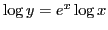

Next: Examples Up: Rules for differentiating standard Previous: Differentiation of the general Contents Index
Instead of applying (VIII) and (VIIIa) at once in differentiating logarithmic functions, we may sometimes simplify the work by first making use of one of the formulas 7-10 in §1.1. Thus above Illustrative Example 5.15.2 may be solved as follows:
Solution. By using 10, in §1.1, we may write this in a form free from radicals as follows: . Then
In differentiating an exponential function, especially a variable with a variable exponent, the best plan is first to take the logarithm of the function and then differentiate. Thus Example 5.15.5 is solved more elegantly as follows:
Solution. Taking the logarithm of both sides,
, by 9 in §1.1.
Now differentiate both sides with respect to  :
:
Solution. Taking the logarithm of both sides,
In the case of a function consisting of a number of factors it is sometimes convenient to take the logarithm before differentiating. Thus,
Solution. Taking the logarithm of both sides,